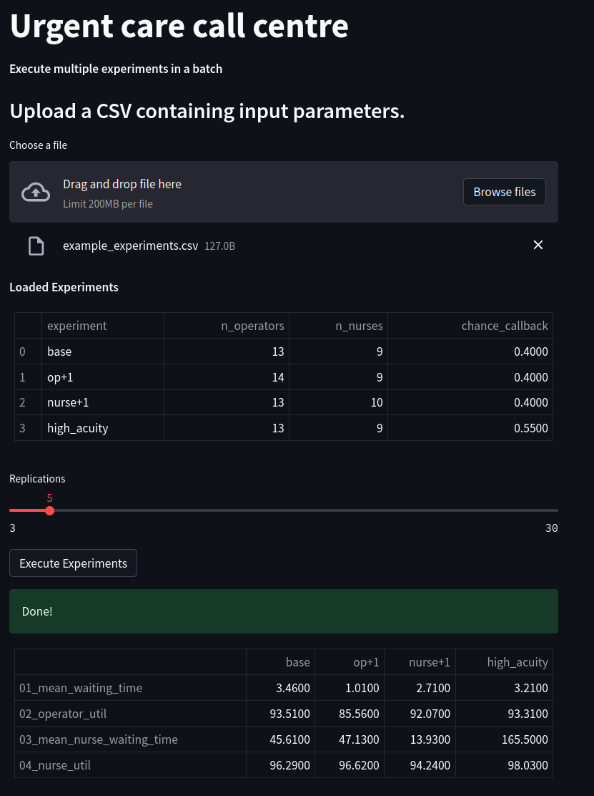

Loading and running multiple experiments#
The Experiment class provides a simple way to run multiple experiments in a batch. To do so we can create multiple instances of Experiment, each with a different set of inputs for the model. These are then executed in a loop.
A method to implement this in streamlit is to upload a Comma Separated Value (.CSV) file containing a list of experiments to the web app. This can be stored internally as a pandas.Dataframe and displayed using a streamlit widget such as st.table. A user can then edit experiment files locally on their own machine (for example, using a spreadsheet software or using CSV viewer extensions for Jupyter-Lab or Visual Studio Code) and upload, inspect, and run, and view results in the app.
Formatting experiment files#
In the format used here each row represents an experiment. The first column is a unique numeric identifier, the second column a name given to the experiment, and following n columns represent the optional input variables that can be passed to an Experiment.
Note that the method described here relies on the names of these columns matching the input parameters to Experiment.
But note that columns do not need to be in the same order as
Experimentarguments and they do not need to be exhaustive. A selection works fine.
For example, in the urgent care call centre we will include 3 columns with the names:
n_operators
n_nurses
chance_callback
The function create_example_csv() creates such a file containing four experiments that vary these paramters.
import pandas as pd
def create_example_csv(filename='example_experiments.csv'):
'''
Create an example CSV file to use in tutorial.
This creates 4 experiments that varys
n_operators, n_nurses, and chance_callback
Params:
------
filename: str, optional (default='example_experiments.csv')
The name and path to the CSV file.
'''
# each column is defined as a seperate list
names = ['base', 'op+1', 'nurse+1', 'high_acuity']
operators = [13, 14, 13, 13]
nurses = [9, 9, 10, 9]
chance_callback = [0.4, 0.4, 0.4, 0.55]
# empty dataframe
df_experiments = pd.DataFrame()
# create new columns from lists
df_experiments['experiment'] = names
df_experiments['n_operators'] = operators
df_experiments['n_nurses'] = nurses
df_experiments['chance_callback'] = chance_callback
df_experiments.to_csv(filename, index_label='id')
create_example_csv()
# load and illustrate results
pd.read_csv('example_experiments.csv', index_col='id')
| experiment | n_operators | n_nurses | chance_callback | |
|---|---|---|---|---|
| id | ||||
| 0 | base | 13 | 9 | 0.40 |
| 1 | op+1 | 14 | 9 | 0.40 |
| 2 | nurse+1 | 13 | 10 | 0.40 |
| 3 | high_acuity | 13 | 9 | 0.55 |
Uploading a file to a web app#
streamlit provides the st.file_uploader function to easily upload the file to the app. This is displayed as a button in the that prompts the user with a file open dialog window when clicked. The user then selected the CSV file and it is uploaded and displayed. The status of the file upload (True or False) can also be assigned to a variable. The following code can be used to do so.
uploaded_file = st.file_uploader("Choose a file")
if uploaded_file is not None:
# assumes CSV format: read into dataframe.
df_experiments = pd.read_csv(uploaded_file, index_col=0)
st.write('**Loaded Experiments**')
st.table(df_experiments)
Converting the upload to instances of Experiment#
Once the upload is complete, the code above displays to the user and stores as a pd.Dataframe in the df_experiments variable. To convert the rows to Experiment objects is a two step process.
We cast the
Dataframeto a nested python dictionary. Each key in the dictionary is the name of an experiment. The value is another dictionary where the key/value pairs are columns and their values.We loop through the dictionary entries and pass the parameters to a new instance of the `Experiment`` class.
The function create_experiments implements both of these steps. The function returns a new dictionary where the key value pairs are the experiment name string, and an instance of Experiment
from model import Experiment
def create_experiments(df_experiments):
'''
Returns dictionary of Experiment objects based on contents of a dataframe
Params:
------
df_experiments: pandas.DataFrame
Dataframe of experiments. First two columns are id, name followed by
variable names. No fixed width
Returns:
--------
dict
'''
experiments = {}
# experiment input parameter dictionary
exp_dict = df_experiments[df_experiments.columns[1:]].T.to_dict()
# names of experiments
exp_names = df_experiments[df_experiments.columns[0]].T.to_list()
# loop through params and create Experiment objects.
for name, params in zip(exp_names, exp_dict.values()):
experiments[name] = Experiment(**params)
return experiments
# test of the function
# assume code is run in same directory as example csv file
df_experiment = pd.read_csv('example_experiments.csv', index_col='id')
# convert to dict containing separate Experiment objects
experiments_to_run = create_experiments(df_experiment)
print(type(experiments_to_run))
print(experiments_to_run['nurse+1'].n_operators)
<class 'dict'>
13.0
Run all experiments and show results in a table.#
We can now iterate over the items in the experiment dictionary and run each experiment sequentially using the multiple_replications function. The function run_all_experiments implements this logic. Results are stored in a dictionary (with the name of the experiment as the key) and returned to the calling script.
Optionally
run_all_experimentscould be stored in a separate module (e.g. with the model) and imported into thestreamlitscript.
from model import (multiple_replications,
RESULTS_COLLECTION_PERIOD)
def run_all_experiments(experiments, rc_period=RESULTS_COLLECTION_PERIOD,
n_reps=5):
'''
Run each of the scenarios for a specified results
collection period and replications.
Params:
------
experiments: dict
dictionary of Experiment objects
rc_period: float
model run length
'''
print('Model experiments:')
print(f'No. experiments to execute = {len(experiments)}\n')
experiment_results = {}
for exp_name, experiment in experiments.items():
print(f'Running {exp_name}', end=' => ')
results = multiple_replications(experiment, rc_period, n_reps)
print('done.\n')
#save the results
experiment_results[exp_name] = results
print('All experiments are complete.')
# format thje results
return experiment_results
results = run_all_experiments(experiments_to_run)
# check type of results object (dict)
print(type(results))
# check type of results for each experiment (dataframe)
print(type(results['base']))
# illustrate results dataframe.
results['base'].head(2)
Model experiments:
No. experiments to execute = 4
Running base =>
done.
Running op+1 =>
done.
Running nurse+1 =>
done.
Running high_acuity =>
done.
All experiments are complete.
<class 'dict'>
<class 'pandas.core.frame.DataFrame'>
| 01_mean_waiting_time | 02_operator_util | 03_mean_nurse_waiting_time | 04_nurse_util | |
|---|---|---|---|---|
| rep | ||||
| 1 | 2.589304 | 93.551568 | 38.369798 | 97.162193 |
| 2 | 2.718889 | 92.233939 | 71.367142 | 97.346817 |
Creating an experiment summary table#
It is also useful to combine individual experiment results into a single summary table, for reporting. The function experiment_summary_frame accepts the results dict as a parameter and creates a single pd.Dataframe reporting the mean of each performance measure (rows) across experiments (columns). To display this in the app we simple need to call st.table and pass in the results of experiment_summary_frame.
def experiment_summary_frame(experiment_results):
'''
Mean results for each performance measure by experiment
Parameters:
----------
experiment_results: dict
dictionary of replications.
Key identifies the performance measure
Returns:
-------
pd.DataFrame
'''
columns = []
summary = pd.DataFrame()
for sc_name, replications in experiment_results.items():
summary = pd.concat([summary, replications.mean()], axis=1)
columns.append(sc_name)
summary.columns = columns
return summary
# show results
# further adaptions might include adding units for figures.
experiment_summary_frame(results).round(2)
| base | op+1 | nurse+1 | high_acuity | |
|---|---|---|---|---|
| 01_mean_waiting_time | 2.91 | 0.85 | 3.26 | 2.78 |
| 02_operator_util | 93.27 | 84.83 | 92.43 | 92.02 |
| 03_mean_nurse_waiting_time | 55.34 | 45.39 | 11.78 | 160.57 |
| 04_nurse_util | 97.18 | 97.08 | 94.05 | 97.72 |
Full streamlit script#
Using the code above and the existing urgent call centre model we can now create a simple app to run batches of experiments in one go. The assumptions of this script are:
The model code is stored in
model.pymodel.pyalso containsexperiment_summary_frameandrun_all_experiments
'''
The code in this streamlit script provides a way to
add multiple experiment control to the simulation app.
'''
import streamlit as st
import pandas as pd
from model import (Experiment, run_all_experiments,
experiment_summary_frame)
INFO_1 = '**Execute multiple experiments in a batch**'
INFO_2 = '### Upload a CSV containing input parameters.'
def create_experiments(df_experiments):
'''
Returns dictionary of Experiment objects based on contents
of a dataframe
Params:
------
df_experiments: pandas.DataFrame
Dataframe of experiments. First two columns are id,
name followed by variable names. No fixed width
Returns:
--------
dict
'''
experiments = {}
# experiment input parameter dictionary
exp_dict = df_experiments[df_experiments.columns[1:]].T.to_dict()
# names of experiments
exp_names = df_experiments[df_experiments.columns[0]].T.to_list()
# loop through params and create Experiment objects.
for name, params in zip(exp_names, exp_dict.values()):
experiments[name] = Experiment(**params)
return experiments
# We add in a title for our web app's page
st.title("Urgent care call centre")
# show the introductory markdown
st.markdown(INFO_1)
st.markdown(INFO_2)
# A user adds an Experiment to the dataframe
uploaded_file = st.file_uploader("Choose a file")
df_results = pd.DataFrame()
if uploaded_file is not None:
# assumes CSV
df_experiments = pd.read_csv(uploaded_file, index_col=0)
st.write('**Loaded Experiments**')
st.table(df_experiments)
# loop through scenarios, create and run model
n_reps = st.slider('Replications', 3, 30, 5, step=1)
if st.button('Execute Experiments'):
# create the batch of experiments based on upload
experiments = create_experiments(df_experiments)
print(experiments)
with st.spinner('Running all experiments'):
results = run_all_experiments(experiments, n_reps=n_reps)
st.success('Done!')
# combine results into a single summary table.
df_results = experiment_summary_frame(results)
# display in the app via table
st.table(df_results.round(2))
